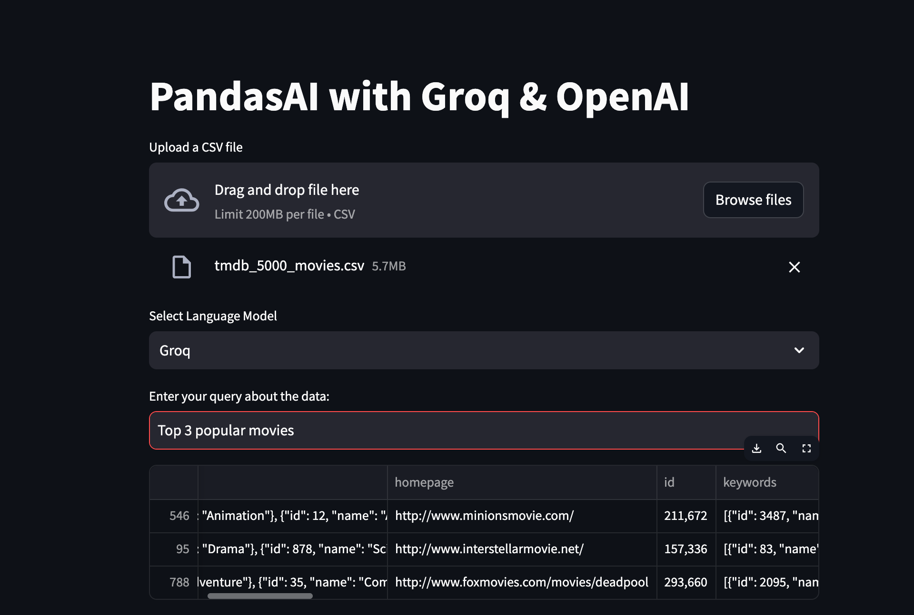

Empower your Data Explorations
Introduction
Data analysis often involves asking natural language questions, generating insights, and even creating visualizations. Traditionally, this requires complex coding. But, what if you could interact with your data like you’d chat with an expert? Enter PandasAI, Groq, and OpenAI – transforming the way you explore your data.
The field of data analysis is constantly evolving, and new tools and technologies are emerging all the time. In this blog post, we will explore the potential of combining three cutting-edge technologies for data analysis: PandasAI, Groq, and OpenAI.
PandasAI:
PandasAI is a Python library that integrates the familiar Pandas data analysis framework with the power of large language models (LLMs) from OpenAI. This allows users to perform data analysis tasks using natural language, making it more intuitive and accessible even for those without extensive programming experience.
Groq:
Groq’s Language Processing Unit™ (LPU™) system is a unique technology specifically designed to accelerate the performance of large language models (LLMs) during inference. This enables real-time, “low-lag” experiences for users and offers significantly faster data processing and analysis.
OpenAI:
OpenAI is a research and deployment company dedicated to developing and promoting friendly AI for the benefit of humanity. They are known for their powerful LLMs, such as GPT-3 and ChatGPT, which can be used for a variety of tasks, including data analysis.
Combining these technologies:
By combining PandasAI, Groq, and OpenAI, we can create a powerful data analysis platform that offers several advantages:
Intuitive and natural language interface: PandasAI allows users to interact with data using natural language, making data analysis more accessible and efficient.
High performance and scalability: Groq’s hardware and software provide the computational power needed to handle large datasets and complex analysis tasks.
Advanced AI capabilities: OpenAI’s LLMs offer powerful capabilities for data cleaning, transformation, and analysis, allowing users to extract deeper insights from their data.
In this blog post, we will demonstrate how to leverage the combined power of PandasAI, Groq, and OpenAI to perform various data analysis tasks within a user-friendly Streamlit app.

The Code
Let’s break down a simplified version of the core code:
import streamlit as st
import pandas as pd
from dotenv import load_dotenv
load_dotenv()
from langchain_groq.chat_models import ChatGroq
import os
from pandasai.llm.openai import OpenAI
from pandasai import SmartDataframe
import matplotlib.pyplot as pltImports
- streamlit: Build our interactive web app.
- pandas: The foundation for data manipulation in Python.
- dotenv: Securely loads API keys from environment variables.
- langchain_groq: Access the Groq LLM.
- pandasai: The bridge between Pandas and LLMs.
- os: Interact with the operating system (for file paths if needed).
- matplotlib.pyplot: Create visualizations of our data.
# Groq LLM Configuration
def load_groq_llm():
return ChatGroq(model_name="mixtral-8x7b-32768", api_key=os.environ['GROQ_API_KEY'])
# OpenAI LLM Configuration
def load_openai_llm():
return OpenAI(api_key=os.environ['OPENAI_API_KEY'])LLM setup:
These functions establish connections to Groq and OpenAI. They include placeholders for your API keys (GROQ_API_KEY, OPENAI_API_KEY) – ensure those are set as environment variables.
st.title("PandasAI with Groq & OpenAI")
# File Upload
uploaded_file = st.file_uploader("Upload a CSV file", type="csv")
if uploaded_file is not None:
data = pd.read_csv(uploaded_file)
groq_llm = load_groq_llm()
openai_llm = load_openai_llm()Streamlit Basics:
- st.title: Sets the title of your app.
- st.file_uploader: Creates an upload widget for users to provide a CSV file.
Loading Data and LLMs:
- pd.read_csv: Reads the CSV into a Pandas DataFrame.
- The load_groq_llm and load_openai_llm functions are called to initialize the LLMs.
# LLM Integration with PandasAI
df_groq = SmartDataframe(data, config={'llm': groq_llm}) # Groq dataframe
df_openai = SmartDataframe(data, config={'llm': openai_llm}) # OpenAI dataframe
# User Interface for Choosing an LLM
llm_choice = st.selectbox("Select Language Model", ("Groq", "OpenAI"))
# Chat Interactions
query = st.text_input("Enter your query about the data:")
if query:
try:
if llm_choice == "Groq":
response = df_groq.chat(query)
elif llm_choice == "OpenAI":
response = df_openai.chat(query)
st.write(response)
if "plot generated" in response.lower(): # Adjust if needed
st.image("mount/src/groq_openai/exports/charts/temp_chart.png")
except Exception as e:
st.error(f"An error occurred: {e}")PandasAI SmartDataframes:
- SmartDataframe(data, config={‘llm’: groq_llm}): Creates a DataFrame specifically linked to the Groq LLM. Any queries on this DataFrame will be routed through Groq.
- A similar SmartDataframe is created for OpenAI.
User Interface:
- st.selectbox:Creates a dropdown in the web app for the user to choose between “Groq” and “OpenAI” as their desired LLM.
Chat Interactions:
st.text_input: Creates a text input field for the user to type their data-related query.
if query: Checks if the user has entered a query.
try/except: A safety net handles potential errors and displays them in the app.
Conditional Logic:
If the user selected “Groq”, the query is sent to the Groq SmartDataframe using .chat(query)
If “OpenAI” is selected, it’s sent to the OpenAI SmartDataframe.
st.write(response): Displays the LLM’s response in the web app.
Resources: